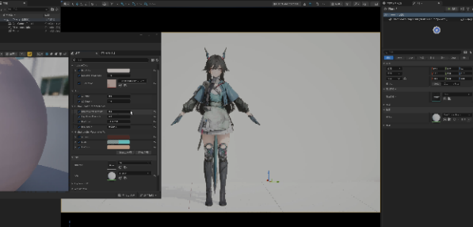

多模型融合的 NPR 角色光照系统
结合 Lambert 漫反射、Rim Light、AO 与 GGX Specular 构建非真实感角色光照模型，并通过摄像机法线与顶点法线混合优化光照方向，使角色在保持二次元风格的同时具备稳定的体积感与明暗层次。
Featured Project
根据终末地美术效果，用NPR和PBR混合仿制。
结合 Lambert 漫反射、Rim Light、AO 与 GGX Specular 构建非真实感角色光照模型，并通过摄像机法线与顶点法线混合优化光照方向，使角色在保持二次元风格的同时具备稳定的体积感与明暗层次。
利用 MatCap 映射增强角色材质表现，并通过高光遮罩控制 Specular 分布，实现风格化的角色表面反射效果，使材质在不同光照环境下保持稳定视觉风格。


通过法线偏移（Normal Offset）生成屏幕空间描边，实现稳定的角色轮廓线效果，并避免传统扩展模型描边带来的穿模和深度错误问题，提高角色在复杂场景中的视觉识别度。
使用 SDF 面部阴影系统生成稳定的脸部阴影分区，并结合 DepthFade 与朝摄像机偏移解决眉毛被头发遮挡的问题，从而保持角色面部表情的清晰表现。
实现 KKS 风格头发渲染模型，通过深度检测头发阴影区域，对阴影像素进行 RGB 到 HSV 颜色空间转换并调整饱和度，再结合 SceneDepth 控制透明度衰减，实现具有层次变化的风格化头发阴影效果。